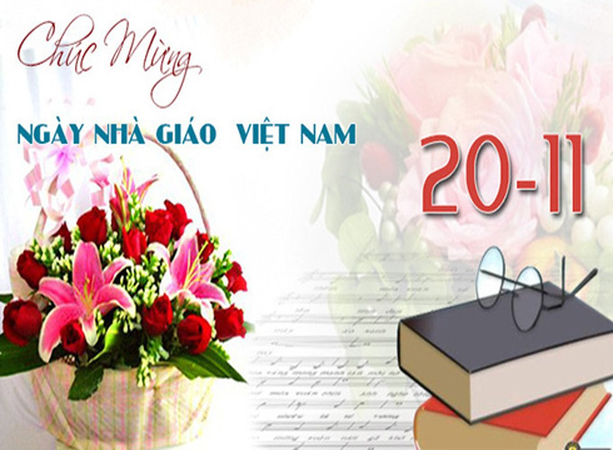
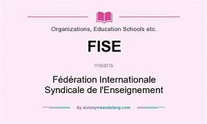
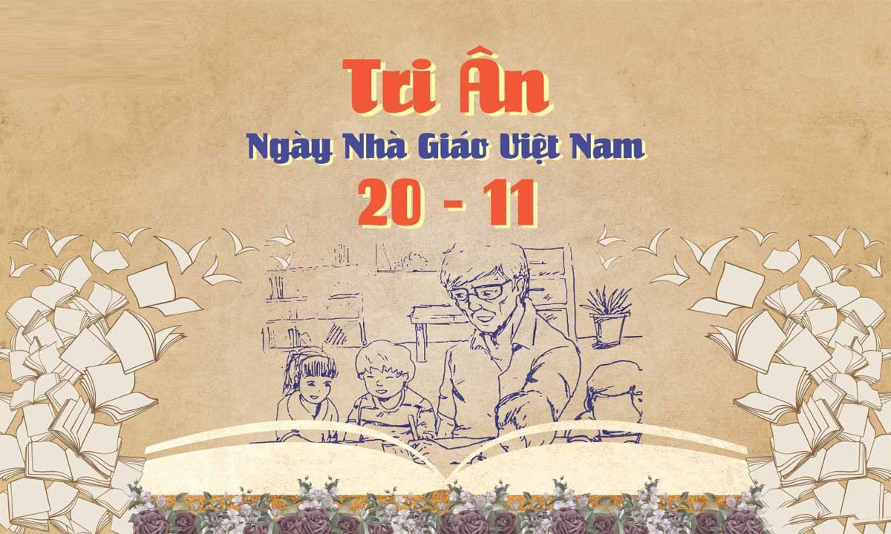
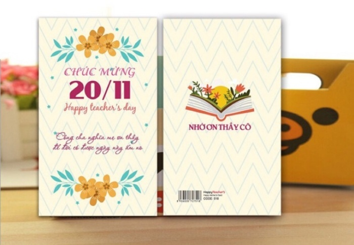
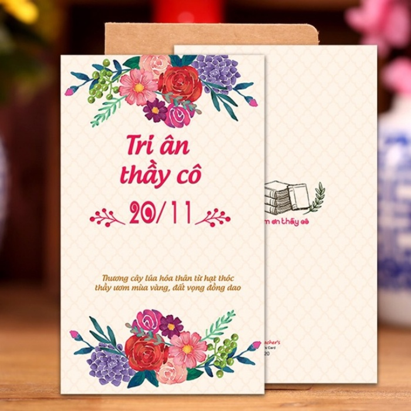
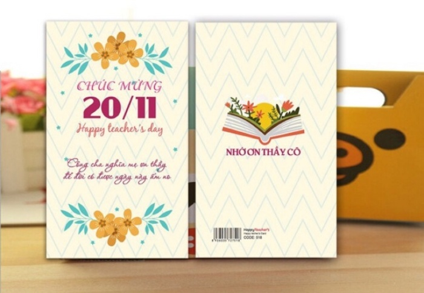
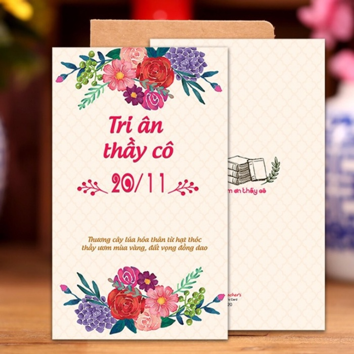
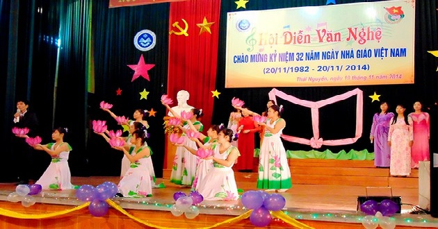
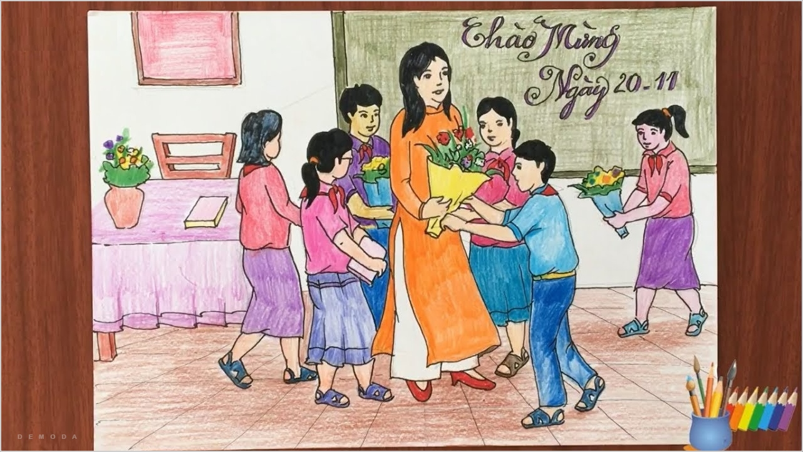

- Dịp để tri ân công lao thầy cô giáo và nghề nhà giáo: thầy cô giáo là những người đã dành cả cuộc đời của mình cho sự nghiệp giáo dục, ươm mầm tri thức, đào tạo ra những thế hệ tương lai của đất nước. Họ là những người đã hy sinh nhiều công sức, tâm huyết để truyền đạt kiến thức, định hình nhân cách, giúp cho các thế hệ học trò phát triển toàn diện. Đây chính là dịp để học sinh bày tỏ lòng biết ơn sâu sắc đối với công lao to lớn của thầy cô.
- Thể hiện truyền thống tôn sư trọng đạo từ ngàn đời của dân tộc: với một dân tộc có truyền thống hiếu học và tôn sư trọng đạo tốt đẹp từ ngàn đời, ngày 20/11 cũng là dịp bày tỏ và thể hiện sâu sắc hơn bao giờ hết tinh thần đó: tôn trọng, biết ơn thầy cô & coi trọng những đạo lý, học vấn được thầy cô chỉ dạy.
- Là dịp để ngành giáo dục nhìn lại, đánh giá hiệu quả và có những phương hướng mới: một ý nghĩa to lớn khác của ngày này là để tôn vinh ngành giáo dục cũng như những người đang thầm lặng cống hiến cho công cuộc trồng người của dân tộc, đồng thời nhìn lại những kết quả hoạt động trong 1 năm của toàn ngành, tiếp tục đưa ra những phương hướng và đổi mới cho những năm sau.
Ngày Nhà giáo Việt Nam 20/11: Nguồn gốc & ý nghĩa tôn sư trọng đạo sâu sắc
Ngày 20/11 ngày Nhà giáo Việt Nam không chỉ là thời khắc kính danh người truyền cảm hứng và dìu dắt tri thức, mà còn là khoảnh khắc thắp sáng ước mơ những hành trang tương lai.
Mỗi năm, vào ngày 20/11 ngày Nhà giáo Việt Nam, đây là thời khắc vinh danh sự hết lòng của những người truyền đạt tri thức, lan tỏa tinh thần biết ơn và tôn vinh sự đóng góp vô giá của các thầy cô giáo. Trong bài viết mới lần này, chúng ta sẽ đồng hành cùng nhau để biết thêm thông tin chi tiết về ngày đặc biệt này.
1. Nguồn gốc, lịch sử ngày nhà giáo Việt Nam 20/11
Hành trình lịch sử ngày 20/11 tôn vinh người truyền đạt tri thức đã bắt đầu từ tháng 1/1946, khi một tổ chức quốc tế mang tên FISE (Féderation International Syndicale des Enseignants) ra đời tại thủ đô Pháp để tập hợp các công đoàn giáo dục trên toàn thế giới
Sau 3 năm, vào năm 1949, tại hội nghị ở thủ đô Warsaw của Ba Lan, FISE ban hành bản "Hiến chương các nhà giáo" gồm 15 chương. Hiến chương không chỉ thể hiện cuộc chiến đấu chống lại hệ thống giáo dục bị chi phối bởi tư bản và phong kiến, mà còn nhấn mạnh sự quan trọng của việc xây dựng hệ thống giáo dục tốt đẹp và bảo vệ quyền lợi của người dạy.
Năm 1953, Công đoàn Giáo dục Việt Nam gia nhập FISE, tham gia vào cuộc họp tại Ba Lan vào tháng 8/1957. Ngày 20/11/1958, Việt Nam tổ chức ngày Quốc tế Hiến chương các nhà giáo lần đầu tiên tại miền Bắc và sau đó tại nhiều vùng giải phóng miền Nam.
Năm 1982, Bộ giáo dục và đào tạo đã có đề nghị chính thức đến Hội đồng bộ trưởng (nay là Chính phủ) nước Cộng hoà xã hội chủ nghĩa Việt Nam về việc ra quyết định lấy ngày 20/11 hàng năm là “Ngày nhà giáo Việt Nam”. Lễ kỷ niệm ngày 20/11 - ngày Nhà giáo Việt Nam đầu tiên được tổ chức hết sức long trọng tại Quảng trường Ba Đình - Hà Nội vào ngày 20/11/1982
Đến khi thống nhất đất nước, ngày 20/11 diễn ra mỗi năm và trở thành ngày truyền thống của nghề giáo. Năm 1982, ngày này chính thức trở thành Ngày Nhà giáo Việt Nam và được tổ chức trọng thể trên toàn quốc.

2. Ý nghĩa của ngày Nhà giáo Việt Nam 20/11

Từ lâu, ngày 20/11 không chỉ là ngày hội riêng của ngành giáo dục mà đây còn là một ngày lễ quan trọng và có ý nghĩa đặc biệt đối với người dân Việt Nam, là ngày "tôn sư trọng đạo” nhằm tôn vinh những “người lái đò thầm lặng”, những người hoạt động trong ngành giáo dục. Ý nghĩa ngày 20/11 là dịp kỷ niệm thường niên của nghề giáo Việt Nam, để học sinh, là thời điểm đặc biệt cho thế hệ học trò bày tỏ lòng biết ơn và tôn trọng đối với thầy cô. Dù còn ngồi trên ghế nhà trường hay đã bước ra ngoài xã hội, ngày Nhà giáo Việt Nam 20/11 là cơ hội để gửi đến thầy cô những lời chúc tốt đẹp và những món quà ý nghĩa.
3. Những lời chúc hay ngày nhà giáo Việt Nam tặng thầy cô
Trong bức tranh ấm áp của ngày 20/11, những lời chúc ý nghĩa trở thành những viên ngọc quý trao tặng thầy cô giáo. Hãy cùng trải qua những cung bậc cảm xúc từ những lời tri ân chân thành, những thông điệp đầy tình cảm từ các lời chúc 20/11 ngắn gọn ý nghĩa.
- Nhân ngày Nhà giáo Việt Nam, em xin gửi tới những người thầy cô giáo tấm lòng biết ơn chân thành. Nghề dạy học là nghề trồng người, và thầy cô là những người hướng dẫn con đường tương lai. Chúc mừng ngày của thầy cô!
- Chúc tất cả các thầy cô giáo mạnh khỏe, hạnh phúc và thành công trong dịp kỷ niệm Ngày Nhà giáo Việt Nam. Riêng thầy cô đang đọc những dòng chữ này, chúc mừng ngày nhà giáo thật vui, thành công và sẽ luôn tiếp tục truyền đạt tri thức cho thế hệ trẻ.
- “Nghĩa thầy cô như nước biển khơi, công mẹ cha con luôn tạc dạ." Em xin cảm ơn sự cống hiến của các thầy cô trong việc truyền đạt tri thức và hướng dẫn chúng em nên người.
- Kính gửi thầy cô giáo yêu quý, chúc thầy cô sức khỏe, thành công và hạnh phúc. Nhân dịp 20/11, em xin gửi niềm vui và sự an lành đến thầy cô. Thầy cô chính là ngọn lửa sáng soi đường cho chúng em.
- Chúc thầy cô trong ngày 20/11 luôn tràn đầy niềm vui và là người định hướng cho chúng em. Chúng em tự hào về thầy cô, vì không chỉ là những người truyền đạt kiến thức mà còn là người bạn đồng hành trên con đường trưởng thành.
- Trong ngày 20/11, xin gửi lời chúc mừng và lòng biết ơn đến những người thầy cô. Các bài giảng của thầy cô không chỉ là kiến thức mà còn là nguồn cảm hứng. Hãy tiếp tục truyền đạt tri thức và giúp chúng ta phát triển.
- Nhân ngày 20/11, xin gửi đến các thầy cô giáo lời chúc mừng và tri ân. Thầy cô luôn là ngọn nến soi sáng cho mỗi chúng em trên con đường học tập và phát triển. Chúc các thầy cô luôn có niềm đam mê và nhiệt huyết trong công việc.
- Nhân dịp kỷ niệm ngày Nhà giáo Việt Nam, em xin chúc thầy cô giáo luôn luôn vui vẻ và tự hào về công việc của mình. Cảm ơn sự cống hiến và tâm huyết của các thầy cô trong việc giáo dục và hướng dẫn nhiều thế hệ học sinh trưởng thành.
4. Một số thiệp chúc mừng
 
 
5. Một số bài hát về thầy cô
6. Một số hoạt động
Học sinh tặng quà thầy cô
Đây có thể là những món quà vật chất hoặc tinh thần, nhưng các món quà đều mang tình yêu thương và tri ân của thế hệ học trò đến thầy cô. Các món quà thường được chọn như vải, hoa, bút,....kèm với những lời chúc hay lời tri ân đến thầy cô đều được xem là những món quà ý nghĩa nhất.
Làm chương trình văn nghệ chủ đề 20/11

Các hoạt động văn nghệ là những món quà tinh thần luôn được trường học các cấp ứng dụng nhằm tạo không khí ngày lễ thêm vui vẻ, khó quên. Thường hoạt động sẽ do học trò hát dành tặng thầy cô hoặc các thầy cô hát tập thể.
Vẽ tranh đề tài ngày 20/11
Vẽ tranh đề tài ngày 20/11 là một trong những hoạt động ý nghĩa nhằm tôn vinh và tỏ lòng biết ơn đối với thầy cô giáo. Các bạn học sinh sẽ cùng nhau sáng tạo nhiều bức tranh màu sắc, vẽ về người cô, người thầy mình yêu quý hoặc vẽ tranh về đề tài trường học.
